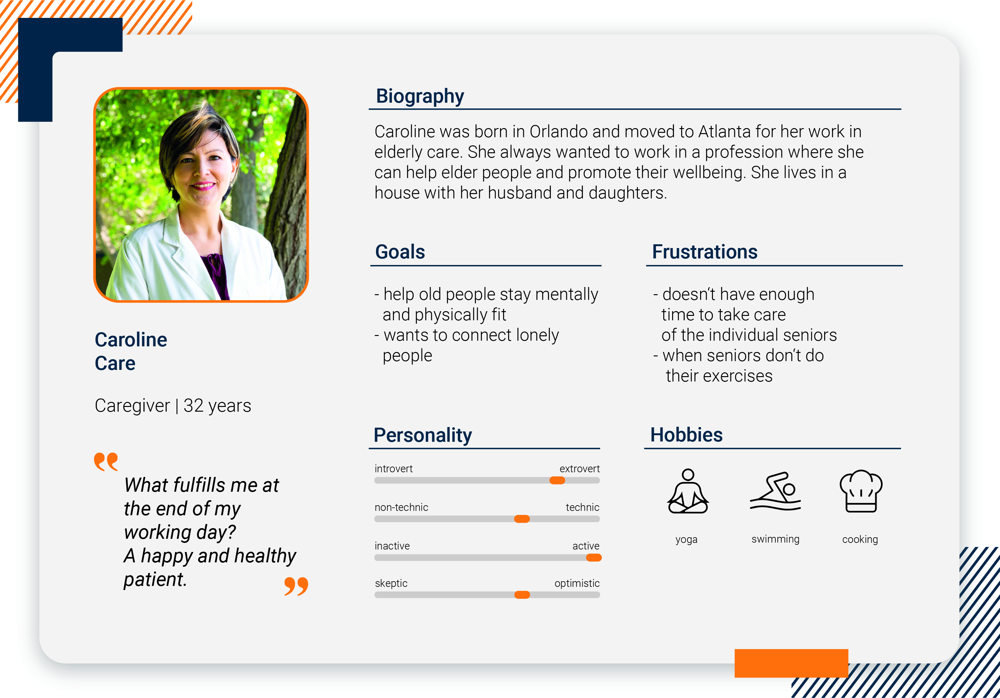
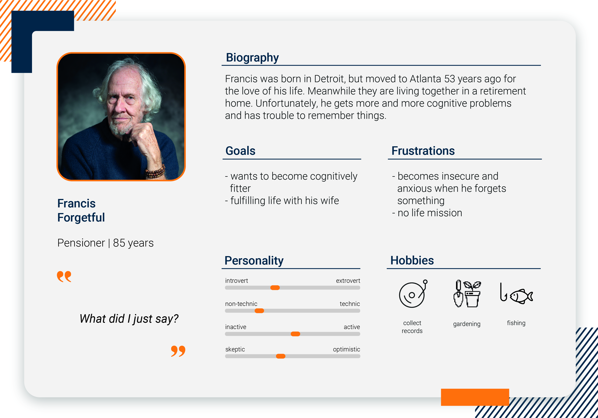

OVERVIEW
As a part of our project in Design of Human Machine Interface, we invented seness. (More inforamtion about seness - Just click here) When developing user-friendly products, it‘s a great challenge to identify the needs, weaknesses and goals of one's target group. That's why it‘s useful to create so-called personas, which represent a fictitious personas part of a project.
TIME
Oct 2021 - Jan 2022
TOOLS

PROCESS
Bringing all the compontents of a persona together:
- Biography
A short descpription about her past and current life.
- Goals
Future goals she wants to accomplish.
- Frustrations
Event or circumstances that causes her to feel frustrated.
- Personality
Rating her on a scala of opposites: introvert vs. extrovert, non-technic vs. technic, inactive vs. active, sketic vs. optimistic
- Hobbies
An activity she enjoys doing in her spare time.
- Quote
A short sentence that could be said by the persona.
Finally, we came up with three personas:
